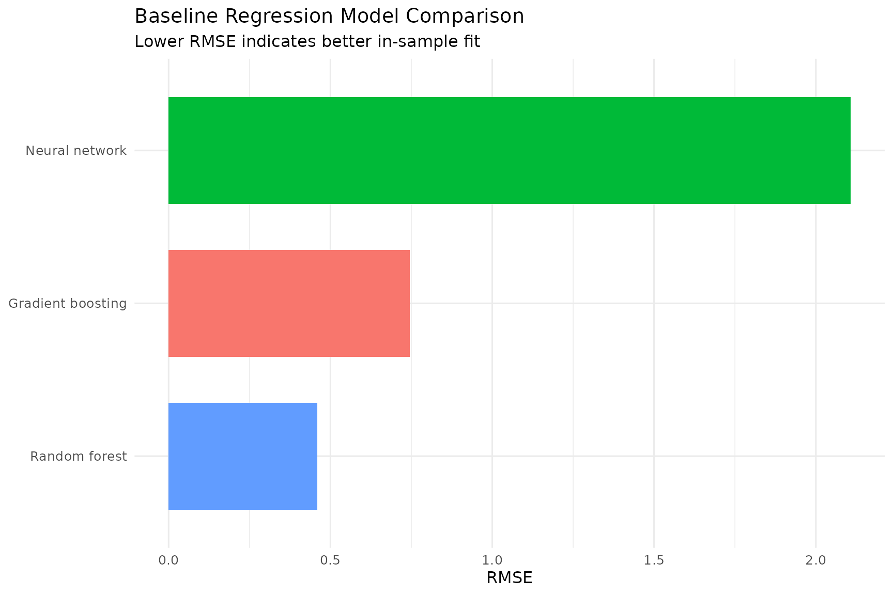
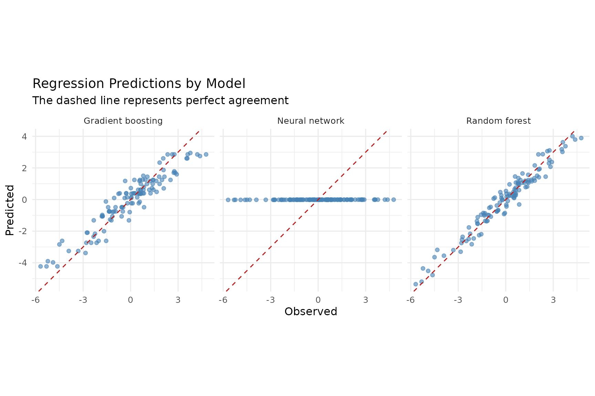
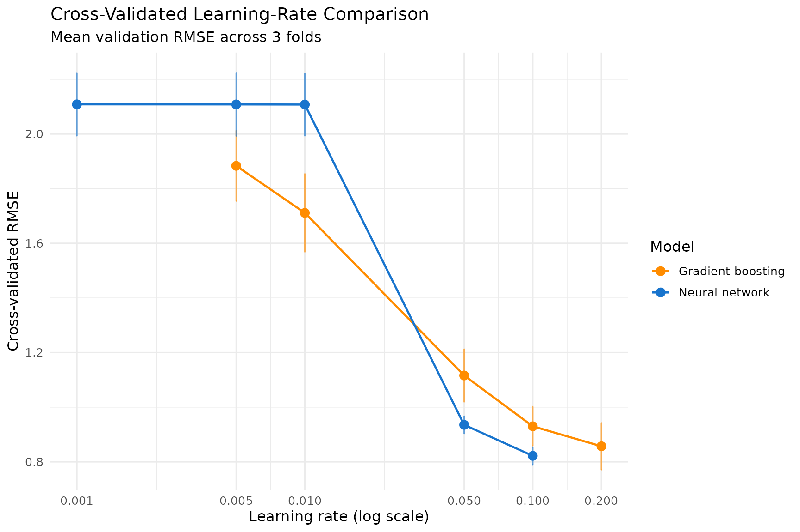
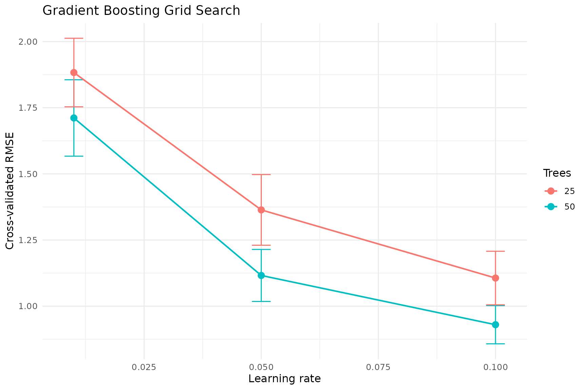
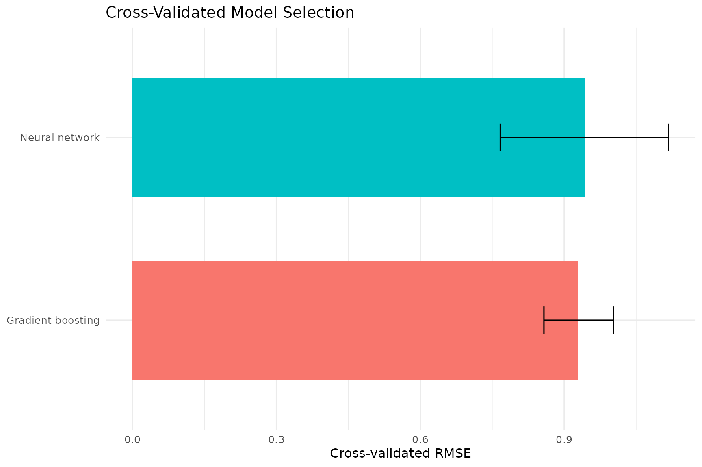
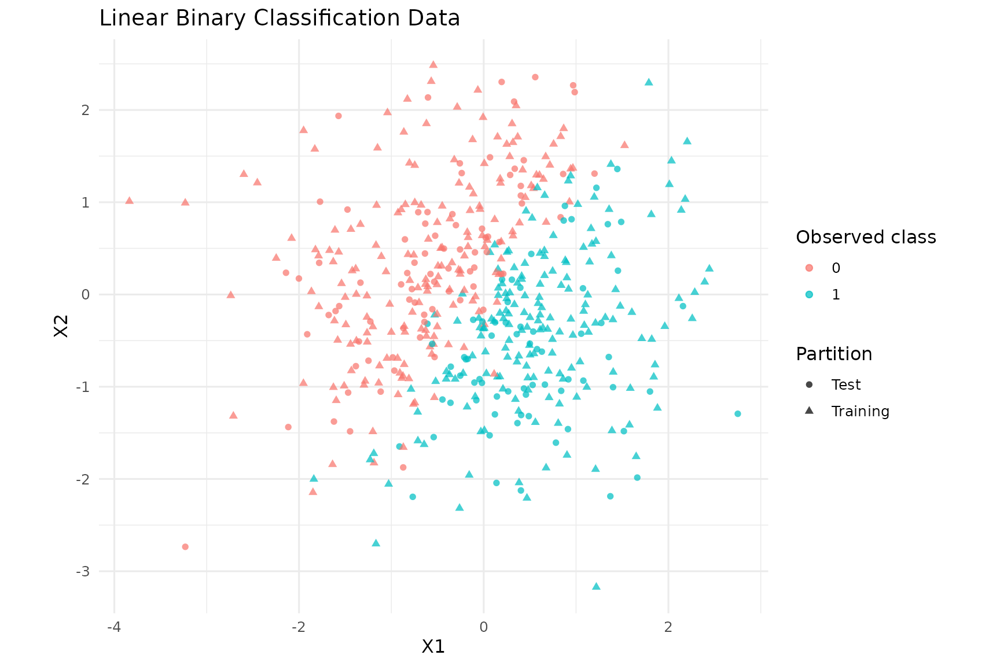
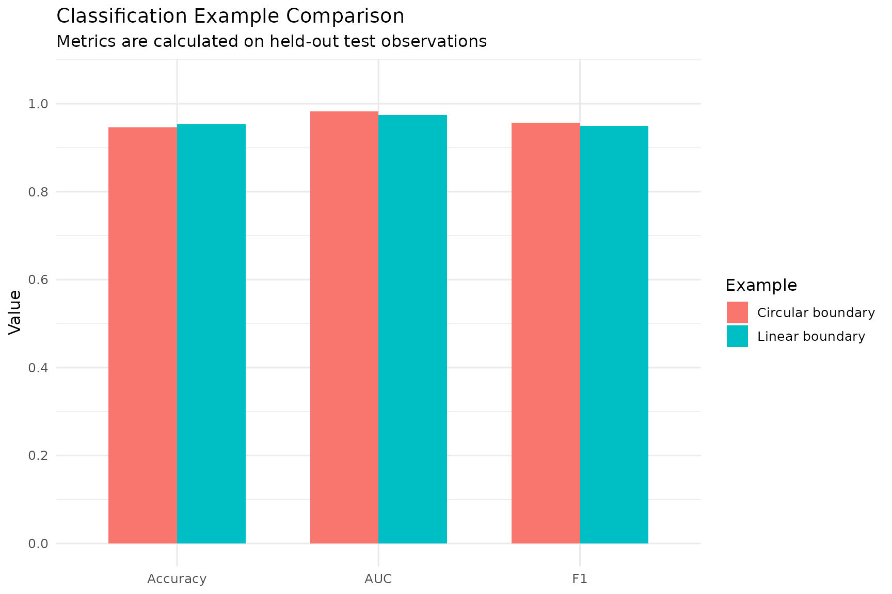

Introduction to GradBoostR
Nic Coxen
2026-10-28
GradBoostR.RmdOverview
GradBoostR provides a consistent interface for random
forest regression, gradient boosting regression, neural network
regression, decision stumps, and fast binary random forest
classification implemented with Rcpp and
RcppArmadillo.
The principal interface consists of gradboostr_fit() and
gradboostr_predict(). Lower-level functions include
fit_stump(), rf_class_fit_fast(),
rf_class_predict_fast(), and
rf_class_predict_prob_fast().
This vignette covers regression, cross-validation, learning-rate analysis, grid search, final model selection, decision stumps, linear and nonlinear classification, confusion matrices, ROC curves, AUC, and probability decision boundaries.
Regression data
set.seed(864)
n_reg <- 120
X_reg <- cbind(
X1 = rnorm(n_reg),
X2 = rnorm(n_reg),
X3 = rnorm(n_reg)
)
y_reg <- (
2.0 * X_reg[, "X1"] -
0.5 * X_reg[, "X2"] +
rnorm(n_reg, sd = 0.7)
)
regression_data <- data.frame(
X1 = X_reg[, "X1"],
X2 = X_reg[, "X2"],
X3 = X_reg[, "X3"],
Response = y_reg
)
head(regression_data, 8)
#> X1 X2 X3 Response
#> 1 0.8259430 -1.21770927 0.79702852 2.72873606
#> 2 1.6837055 -0.40938819 0.96225350 4.21391230
#> 3 -2.9104891 0.09768491 0.17461701 -5.31318501
#> 4 1.8750856 0.14468638 0.02812713 3.53754995
#> 5 0.6510606 1.66285955 -1.69835956 0.01615669
#> 6 -0.7975370 0.01234072 0.45650717 -1.21428786
#> 7 1.1283158 0.69479572 -0.73021125 2.07743833
#> 8 0.7023991 -1.05993568 -0.29250443 0.59055968
ggplot(regression_data, aes(X1, Response)) +
geom_point(alpha = 0.7, colour = "steelblue") +
geom_smooth(
method = "lm", formula = y ~ x, se = FALSE,
colour = "firebrick", linewidth = 0.8
) +
theme_minimal(base_size = 12) +
labs(
title = "Synthetic Regression Data",
subtitle = "The response contains a strong contribution from X1",
x = "X1", y = "Response"
)
rmse <- function(actual, predicted) {
sqrt(mean((actual - predicted)^2))
}
scale_train_validation <- function(training_data, validation_data) {
training_center <- colMeans(training_data)
training_scale <- apply(training_data, 2, sd)
training_scale[!is.finite(training_scale) | training_scale == 0] <- 1
scaled_training <- sweep(training_data, 2, training_center, FUN = "-")
scaled_training <- sweep(scaled_training, 2, training_scale, FUN = "/")
scaled_validation <- sweep(validation_data, 2, training_center, FUN = "-")
scaled_validation <- sweep(scaled_validation, 2, training_scale, FUN = "/")
list(train = scaled_training, validation = scaled_validation)
}Baseline regression models
Random forest regression
rf_reg_model <- gradboostr_fit(X_reg, y_reg, method = "rf")
rf_reg_prediction <- as.vector(
gradboostr_predict(rf_reg_model, X_reg)
)
rf_reg_rmse <- rmse(y_reg, rf_reg_prediction)
rf_reg_rmse
#> [1] 0.4590821Gradient boosting regression
gbm_model <- gradboostr_fit(
X_reg, y_reg,
method = "gbm",
learning_rate = 0.1,
n_trees = 50
)
gbm_prediction <- as.vector(
gradboostr_predict(gbm_model, X_reg)
)
gbm_rmse <- rmse(y_reg, gbm_prediction)
gbm_rmse
#> [1] 0.744947Neural network regression
X_reg_scaled <- scale(X_reg)
set.seed(273)
nn_model <- gradboostr_fit(
X_reg_scaled, y_reg,
method = "nn",
hidden = 10,
epochs = 50,
learning_rate = 0.01
)
nn_prediction <- as.vector(
gradboostr_predict(nn_model, X_reg_scaled)
)
nn_rmse <- rmse(y_reg, nn_prediction)
nn_rmse
#> [1] 2.107537Baseline model comparison
baseline_results <- data.frame(
Model = c("Random forest", "Gradient boosting", "Neural network"),
RMSE = c(rf_reg_rmse, gbm_rmse, nn_rmse)
)
knitr::kable(
baseline_results,
digits = 4,
caption = "In-sample regression RMSE"
)| Model | RMSE |
|---|---|
| Random forest | 0.4591 |
| Gradient boosting | 0.7449 |
| Neural network | 2.1075 |
ggplot(
baseline_results,
aes(reorder(Model, RMSE), RMSE, fill = Model)
) +
geom_col(show.legend = FALSE, width = 0.7) +
coord_flip() +
theme_minimal(base_size = 12) +
labs(
title = "Baseline Regression Model Comparison",
subtitle = "Lower RMSE indicates better in-sample fit",
x = NULL, y = "RMSE"
)
baseline_predictions <- rbind(
data.frame(Observed = y_reg, Predicted = rf_reg_prediction, Model = "Random forest"),
data.frame(Observed = y_reg, Predicted = gbm_prediction, Model = "Gradient boosting"),
data.frame(Observed = y_reg, Predicted = nn_prediction, Model = "Neural network")
)
ggplot(baseline_predictions, aes(Observed, Predicted)) +
geom_point(alpha = 0.6, colour = "steelblue") +
geom_abline(
intercept = 0, slope = 1,
colour = "firebrick", linetype = "dashed"
) +
facet_wrap(~ Model) +
coord_equal() +
theme_minimal(base_size = 12) +
labs(
title = "Regression Predictions by Model",
subtitle = "The dashed line represents perfect agreement",
x = "Observed", y = "Predicted"
)
nn_residual_data <- data.frame(
Predicted = nn_prediction,
Residual = y_reg - nn_prediction
)
ggplot(nn_residual_data, aes(Predicted, Residual)) +
geom_hline(yintercept = 0, colour = "firebrick", linetype = "dashed") +
geom_point(alpha = 0.7, colour = "purple4") +
theme_minimal(base_size = 12) +
labs(
title = "Neural Network Residuals",
x = "Predicted", y = "Residual"
)
Learning-rate analysis
Gradient boosting learning rate
gbm_learning_rate_values <- c(0.005, 0.01, 0.05, 0.10, 0.20)
gbm_learning_rate_results <- do.call(
rbind,
lapply(seq_along(gbm_learning_rate_values), function(rate_index) {
current_rate <- gbm_learning_rate_values[rate_index]
fold_rmse <- numeric(n_folds)
for (fold in seq_len(n_folds)) {
training_rows <- fold_id != fold
validation_rows <- fold_id == fold
set.seed(4000 + rate_index * 100 + fold)
model <- gradboostr_fit(
X_reg[training_rows, , drop = FALSE],
y_reg[training_rows],
method = "gbm",
learning_rate = current_rate,
n_trees = 50
)
prediction <- as.vector(
gradboostr_predict(
model,
X_reg[validation_rows, , drop = FALSE]
)
)
fold_rmse[fold] <- rmse(y_reg[validation_rows], prediction)
}
data.frame(
Model = "Gradient boosting",
LearningRate = current_rate,
MeanRMSE = mean(fold_rmse),
SDRMSE = sd(fold_rmse)
)
})
)
gbm_learning_rate_results <- gbm_learning_rate_results[
order(gbm_learning_rate_results$MeanRMSE),
]
row.names(gbm_learning_rate_results) <- NULL
knitr::kable(
gbm_learning_rate_results,
digits = 4,
caption = paste(n_folds, "fold gradient boosting learning-rate results")
)| Model | LearningRate | MeanRMSE | SDRMSE |
|---|---|---|---|
| Gradient boosting | 0.200 | 0.8570 | 0.0867 |
| Gradient boosting | 0.100 | 0.9300 | 0.0723 |
| Gradient boosting | 0.050 | 1.1161 | 0.0983 |
| Gradient boosting | 0.010 | 1.7113 | 0.1444 |
| Gradient boosting | 0.005 | 1.8834 | 0.1295 |
ggplot(gbm_learning_rate_results, aes(LearningRate, MeanRMSE)) +
geom_errorbar(
aes(
ymin = pmax(MeanRMSE - SDRMSE, 0),
ymax = MeanRMSE + SDRMSE
),
width = 0.003,
colour = "grey40"
) +
geom_line(colour = "darkorange", linewidth = 0.8) +
geom_point(colour = "darkorange", size = 3) +
scale_x_log10(breaks = sort(gbm_learning_rate_values)) +
theme_minimal(base_size = 12) +
labs(
title = "Gradient Boosting Learning-Rate Analysis",
subtitle = paste("Mean validation RMSE across", n_folds, "folds"),
x = "Learning rate (log scale)",
y = "Cross-validated RMSE"
)
Neural network learning rate
nn_learning_rate_values <- c(0.001, 0.005, 0.01, 0.05, 0.10)
nn_learning_rate_results <- do.call(
rbind,
lapply(seq_along(nn_learning_rate_values), function(rate_index) {
current_rate <- nn_learning_rate_values[rate_index]
fold_rmse <- numeric(n_folds)
for (fold in seq_len(n_folds)) {
training_rows <- fold_id != fold
validation_rows <- fold_id == fold
scaled_fold <- scale_train_validation(
X_reg[training_rows, , drop = FALSE],
X_reg[validation_rows, , drop = FALSE]
)
set.seed(5000 + rate_index * 100 + fold)
model <- gradboostr_fit(
scaled_fold$train,
y_reg[training_rows],
method = "nn",
hidden = 10,
epochs = 50,
learning_rate = current_rate
)
prediction <- as.vector(
gradboostr_predict(model, scaled_fold$validation)
)
fold_rmse[fold] <- rmse(y_reg[validation_rows], prediction)
}
data.frame(
Model = "Neural network",
LearningRate = current_rate,
MeanRMSE = mean(fold_rmse),
SDRMSE = sd(fold_rmse)
)
})
)
nn_learning_rate_results <- nn_learning_rate_results[
order(nn_learning_rate_results$MeanRMSE),
]
row.names(nn_learning_rate_results) <- NULL
knitr::kable(
nn_learning_rate_results,
digits = 4,
caption = paste(n_folds, "fold neural-network learning-rate results")
)| Model | LearningRate | MeanRMSE | SDRMSE |
|---|---|---|---|
| Neural network | 0.100 | 0.8219 | 0.0320 |
| Neural network | 0.050 | 0.9353 | 0.0326 |
| Neural network | 0.010 | 2.1078 | 0.1162 |
| Neural network | 0.005 | 2.1082 | 0.1167 |
| Neural network | 0.001 | 2.1085 | 0.1168 |
ggplot(nn_learning_rate_results, aes(LearningRate, MeanRMSE)) +
geom_errorbar(
aes(
ymin = pmax(MeanRMSE - SDRMSE, 0),
ymax = MeanRMSE + SDRMSE
),
width = 0.002,
colour = "grey40"
) +
geom_line(colour = "dodgerblue3", linewidth = 0.8) +
geom_point(colour = "dodgerblue3", size = 3) +
scale_x_log10(breaks = sort(nn_learning_rate_values)) +
theme_minimal(base_size = 12) +
labs(
title = "Neural Network Learning-Rate Analysis",
subtitle = paste("Mean validation RMSE across", n_folds, "folds"),
x = "Learning rate (log scale)",
y = "Cross-validated RMSE"
)
Combined learning-rate comparison
combined_learning_rate_results <- rbind(
gbm_learning_rate_results,
nn_learning_rate_results
)
ggplot(
combined_learning_rate_results,
aes(LearningRate, MeanRMSE, colour = Model, group = Model)
) +
geom_errorbar(
aes(
ymin = pmax(MeanRMSE - SDRMSE, 0),
ymax = MeanRMSE + SDRMSE
),
width = 0.002,
alpha = 0.65
) +
geom_line(linewidth = 0.8) +
geom_point(size = 3) +
scale_x_log10(
breaks = sort(unique(combined_learning_rate_results$LearningRate))
) +
scale_colour_manual(
values = c(
"Gradient boosting" = "darkorange",
"Neural network" = "dodgerblue3"
)
) +
theme_minimal(base_size = 12) +
labs(
title = "Cross-Validated Learning-Rate Comparison",
subtitle = paste("Mean validation RMSE across", n_folds, "folds"),
x = "Learning rate (log scale)",
y = "Cross-validated RMSE",
colour = "Model"
)
Gradient boosting grid search
gbm_parameter_grid <- expand.grid(
LearningRate = c(0.01, 0.05, 0.10),
Trees = c(25, 50),
KEEP.OUT.ATTRS = FALSE,
stringsAsFactors = FALSE
)
gbm_cv_results <- do.call(
rbind,
lapply(seq_len(nrow(gbm_parameter_grid)), function(parameter_index) {
parameters <- gbm_parameter_grid[parameter_index, , drop = FALSE]
fold_rmse <- numeric(n_folds)
for (fold in seq_len(n_folds)) {
training_rows <- fold_id != fold
validation_rows <- fold_id == fold
set.seed(1000 + parameter_index * 100 + fold)
model <- gradboostr_fit(
X_reg[training_rows, , drop = FALSE],
y_reg[training_rows],
method = "gbm",
learning_rate = parameters$LearningRate,
n_trees = parameters$Trees
)
prediction <- as.vector(
gradboostr_predict(
model,
X_reg[validation_rows, , drop = FALSE]
)
)
fold_rmse[fold] <- rmse(y_reg[validation_rows], prediction)
}
data.frame(
LearningRate = parameters$LearningRate,
Trees = parameters$Trees,
MeanRMSE = mean(fold_rmse),
SDRMSE = sd(fold_rmse)
)
})
)
gbm_cv_results <- gbm_cv_results[order(gbm_cv_results$MeanRMSE), ]
row.names(gbm_cv_results) <- NULL
best_gbm_parameters <- gbm_cv_results[1, , drop = FALSE]
knitr::kable(
gbm_cv_results,
digits = 4,
caption = "Gradient boosting grid-search results"
)| LearningRate | Trees | MeanRMSE | SDRMSE |
|---|---|---|---|
| 0.10 | 50 | 0.9300 | 0.0723 |
| 0.10 | 25 | 1.1064 | 0.1012 |
| 0.05 | 50 | 1.1161 | 0.0983 |
| 0.05 | 25 | 1.3638 | 0.1336 |
| 0.01 | 50 | 1.7113 | 0.1444 |
| 0.01 | 25 | 1.8829 | 0.1295 |
gbm_grid_plot <- gbm_cv_results
gbm_grid_plot$Trees <- factor(gbm_grid_plot$Trees)
ggplot(
gbm_grid_plot,
aes(LearningRate, MeanRMSE, colour = Trees, group = Trees)
) +
geom_errorbar(
aes(
ymin = pmax(MeanRMSE - SDRMSE, 0),
ymax = MeanRMSE + SDRMSE
),
width = 0.004
) +
geom_line(linewidth = 0.8) +
geom_point(size = 3) +
theme_minimal(base_size = 12) +
labs(
title = "Gradient Boosting Grid Search",
x = "Learning rate",
y = "Cross-validated RMSE",
colour = "Trees"
)
Neural network grid search
nn_parameter_grid <- expand.grid(
HiddenUnits = c(5, 10),
Epochs = c(25, 50),
LearningRate = c(0.01, 0.05),
KEEP.OUT.ATTRS = FALSE,
stringsAsFactors = FALSE
)
nn_cv_results <- do.call(
rbind,
lapply(seq_len(nrow(nn_parameter_grid)), function(parameter_index) {
parameters <- nn_parameter_grid[parameter_index, , drop = FALSE]
fold_rmse <- numeric(n_folds)
for (fold in seq_len(n_folds)) {
training_rows <- fold_id != fold
validation_rows <- fold_id == fold
scaled_fold <- scale_train_validation(
X_reg[training_rows, , drop = FALSE],
X_reg[validation_rows, , drop = FALSE]
)
set.seed(3000 + parameter_index * 100 + fold)
model <- gradboostr_fit(
scaled_fold$train,
y_reg[training_rows],
method = "nn",
hidden = parameters$HiddenUnits,
epochs = parameters$Epochs,
learning_rate = parameters$LearningRate
)
prediction <- as.vector(
gradboostr_predict(model, scaled_fold$validation)
)
fold_rmse[fold] <- rmse(y_reg[validation_rows], prediction)
}
data.frame(
HiddenUnits = parameters$HiddenUnits,
Epochs = parameters$Epochs,
LearningRate = parameters$LearningRate,
MeanRMSE = mean(fold_rmse),
SDRMSE = sd(fold_rmse)
)
})
)
nn_cv_results <- nn_cv_results[order(nn_cv_results$MeanRMSE), ]
row.names(nn_cv_results) <- NULL
best_nn_parameters <- nn_cv_results[1, , drop = FALSE]
knitr::kable(
nn_cv_results,
digits = 4,
caption = "Neural-network grid-search results"
)| HiddenUnits | Epochs | LearningRate | MeanRMSE | SDRMSE |
|---|---|---|---|---|
| 10 | 50 | 0.05 | 0.9423 | 0.1756 |
| 5 | 50 | 0.05 | 1.0021 | 0.1724 |
| 10 | 25 | 0.05 | 2.0191 | 0.1188 |
| 5 | 25 | 0.05 | 2.0773 | 0.1271 |
| 10 | 50 | 0.01 | 2.1062 | 0.1167 |
| 5 | 50 | 0.01 | 2.1077 | 0.1164 |
| 10 | 25 | 0.01 | 2.1084 | 0.1166 |
| 5 | 25 | 0.01 | 2.1086 | 0.1164 |
nn_heatmap_data <- nn_cv_results
nn_heatmap_data$Epochs <- factor(nn_heatmap_data$Epochs)
rate_levels <- sort(unique(nn_heatmap_data$LearningRate))
nn_heatmap_data$RateLabel <- factor(
nn_heatmap_data$LearningRate,
levels = rate_levels,
labels = paste("Learning rate =", rate_levels)
)
ggplot(nn_heatmap_data, aes(HiddenUnits, Epochs, fill = MeanRMSE)) +
geom_tile(colour = "white", linewidth = 0.7) +
geom_text(aes(label = sprintf("%.3f", MeanRMSE)), size = 3.5) +
facet_wrap(~ RateLabel) +
scale_fill_viridis_c(option = "C", direction = -1) +
theme_minimal(base_size = 12) +
theme(panel.grid = element_blank()) +
labs(
title = "Neural Network Grid Search",
x = "Hidden units",
y = "Epochs",
fill = "CV RMSE"
)
Cross-validated model selection
selection_summary <- data.frame(
Model = c("Gradient boosting", "Neural network"),
MeanRMSE = c(
best_gbm_parameters$MeanRMSE,
best_nn_parameters$MeanRMSE
),
SDRMSE = c(
best_gbm_parameters$SDRMSE,
best_nn_parameters$SDRMSE
)
)
knitr::kable(
selection_summary,
digits = 4,
caption = "Selected cross-validated regression models"
)| Model | MeanRMSE | SDRMSE |
|---|---|---|
| Gradient boosting | 0.9300 | 0.0723 |
| Neural network | 0.9423 | 0.1756 |
ggplot(
selection_summary,
aes(reorder(Model, MeanRMSE), MeanRMSE, fill = Model)
) +
geom_col(show.legend = FALSE, width = 0.65) +
geom_errorbar(
aes(
ymin = pmax(MeanRMSE - SDRMSE, 0),
ymax = MeanRMSE + SDRMSE
),
width = 0.15
) +
coord_flip() +
theme_minimal(base_size = 12) +
labs(
title = "Cross-Validated Model Selection",
x = NULL,
y = "Cross-validated RMSE"
)
Decision stump
set.seed(623)
n_stump <- 200
X_stump <- cbind(
X1 = rnorm(n_stump),
X2 = rnorm(n_stump),
X3 = rnorm(n_stump)
)
y_stump <- ifelse(
X_stump[, "X1"] > 0,
3 + X_stump[, "X2"],
-3 + X_stump[, "X2"]
) + rnorm(n_stump, sd = 0.4)
stump_model <- fit_stump(X_stump, y_stump)
predict_stump <- function(X, model) {
feature <- model$feature + 1L
ifelse(
X[, feature] <= model$threshold,
model$left_val,
model$right_val
)
}
stump_prediction <- predict_stump(X_stump, stump_model)
rmse(y_stump, stump_prediction)
#> [1] 3.495421Classification helpers
classification_metrics <- function(actual, predicted) {
actual <- as.integer(actual)
predicted <- as.integer(predicted)
tp <- sum(actual == 1 & predicted == 1)
tn <- sum(actual == 0 & predicted == 0)
fp <- sum(actual == 0 & predicted == 1)
fn <- sum(actual == 1 & predicted == 0)
accuracy <- (tp + tn) / length(actual)
precision <- tp / max(1, tp + fp)
recall <- tp / max(1, tp + fn)
specificity <- tn / max(1, tn + fp)
f1 <- if (precision + recall == 0) {
0
} else {
2 * precision * recall / (precision + recall)
}
data.frame(
Accuracy = accuracy,
Precision = precision,
Recall = recall,
Specificity = specificity,
F1 = f1
)
}
roc_curve_data <- function(actual, probability) {
thresholds <- sort(
unique(c(Inf, probability, -Inf)),
decreasing = TRUE
)
roc_points <- lapply(thresholds, function(threshold) {
predicted <- as.integer(probability >= threshold)
tp <- sum(actual == 1 & predicted == 1)
tn <- sum(actual == 0 & predicted == 0)
fp <- sum(actual == 0 & predicted == 1)
fn <- sum(actual == 1 & predicted == 0)
data.frame(
Threshold = threshold,
TPR = tp / max(1, tp + fn),
FPR = fp / max(1, fp + tn)
)
})
result <- do.call(rbind, roc_points)
result[order(result$FPR, result$TPR), ]
}
auc_from_roc <- function(roc_data) {
roc_data <- roc_data[order(roc_data$FPR, roc_data$TPR), ]
sum(
diff(roc_data$FPR) *
(head(roc_data$TPR, -1) + tail(roc_data$TPR, -1)) / 2
)
}
confusion_plot_data <- function(actual, predicted) {
as.data.frame(
table(
Observed = factor(actual, levels = c(0, 1)),
Predicted = factor(predicted, levels = c(0, 1))
)
)
}Linear binary classification
set.seed(738)
n_linear <- 500
X_linear <- cbind(
X1 = rnorm(n_linear),
X2 = rnorm(n_linear)
)
linear_score <- (
1.25 * X_linear[, "X1"] -
0.85 * X_linear[, "X2"] +
rnorm(n_linear, sd = 0.45)
)
y_linear <- ifelse(linear_score > 0, 1, 0)
linear_train_rows <- sample(
seq_len(n_linear),
floor(0.70 * n_linear)
)
linear_test_rows <- setdiff(seq_len(n_linear), linear_train_rows)
linear_data <- data.frame(
X1 = X_linear[, "X1"],
X2 = X_linear[, "X2"],
Class = factor(y_linear),
Partition = ifelse(
seq_len(n_linear) %in% linear_train_rows,
"Training",
"Test"
)
)
ggplot(linear_data, aes(X1, X2, colour = Class, shape = Partition)) +
geom_point(alpha = 0.72) +
coord_equal() +
theme_minimal(base_size = 12) +
labs(
title = "Linear Binary Classification Data",
x = "X1", y = "X2", colour = "Observed class"
)
linear_forest <- rf_class_fit_fast(
X_linear[linear_train_rows, , drop = FALSE],
y_linear[linear_train_rows],
n_trees = 100,
max_depth = 6
)
linear_probability <- as.vector(
GradBoostR::rf_class_predict_prob_fast(
X_linear[linear_test_rows, , drop = FALSE],
linear_forest
)
)
linear_prediction <- as.integer(linear_probability >= 0.5)
linear_metrics <- classification_metrics(
y_linear[linear_test_rows],
linear_prediction
)
linear_metrics
#> Accuracy Precision Recall Specificity F1
#> 1 0.9533333 0.9428571 0.9565217 0.9506173 0.9496403
linear_confusion <- confusion_plot_data(
y_linear[linear_test_rows],
linear_prediction
)
ggplot(linear_confusion, aes(Predicted, Observed, fill = Freq)) +
geom_tile(colour = "white", linewidth = 0.8) +
geom_text(aes(label = Freq), size = 5) +
scale_fill_viridis_c(option = "C") +
coord_equal() +
theme_minimal(base_size = 12) +
theme(panel.grid = element_blank()) +
labs(
title = "Linear Classification Confusion Matrix",
x = "Predicted class", y = "Observed class", fill = "Count"
)
linear_roc <- roc_curve_data(
y_linear[linear_test_rows],
linear_probability
)
linear_auc <- auc_from_roc(linear_roc)
ggplot(linear_roc, aes(FPR, TPR)) +
geom_line(colour = "darkgreen", linewidth = 1) +
geom_abline(
intercept = 0, slope = 1,
linetype = "dashed", colour = "grey50"
) +
coord_equal() +
theme_minimal(base_size = 12) +
labs(
title = "Linear Classification ROC Curve",
subtitle = paste("Held-out AUC =", round(linear_auc, 4)),
x = "False positive rate",
y = "True positive rate"
)
Nonlinear binary classification
set.seed(353)
n_class <- 500
X_class <- cbind(
X1 = rnorm(n_class),
X2 = rnorm(n_class)
)
y_class <- ifelse(
X_class[, "X1"]^2 + X_class[, "X2"]^2 > 1,
1,
0
)
nonlinear_train_rows <- sample(
seq_len(n_class),
floor(0.70 * n_class)
)
nonlinear_test_rows <- setdiff(seq_len(n_class), nonlinear_train_rows)
classification_data <- data.frame(
X1 = X_class[, "X1"],
X2 = X_class[, "X2"],
Class = factor(
y_class,
levels = c(0, 1),
labels = c("Inside", "Outside")
),
Partition = ifelse(
seq_len(n_class) %in% nonlinear_train_rows,
"Training",
"Test"
)
)
ggplot(
classification_data,
aes(X1, X2, colour = Class, shape = Partition)
) +
geom_point(alpha = 0.72) +
scale_colour_manual(
values = c("Inside" = "#2166AC", "Outside" = "#B2182B")
) +
coord_equal() +
theme_minimal(base_size = 12) +
labs(
title = "Nonlinear Binary Classification Data",
subtitle = "The true class boundary is approximately circular",
x = "X1", y = "X2", colour = "Observed class"
)
nonlinear_forest <- rf_class_fit_fast(
X_class[nonlinear_train_rows, , drop = FALSE],
y_class[nonlinear_train_rows],
n_trees = 100,
max_depth = 6
)
nonlinear_probability <- as.vector(
GradBoostR::rf_class_predict_prob_fast(
X_class[nonlinear_test_rows, , drop = FALSE],
nonlinear_forest
)
)
nonlinear_prediction <- as.integer(nonlinear_probability >= 0.5)
nonlinear_metrics <- classification_metrics(
y_class[nonlinear_test_rows],
nonlinear_prediction
)
nonlinear_metrics
#> Accuracy Precision Recall Specificity F1
#> 1 0.9466667 0.967033 0.9462366 0.9473684 0.9565217
nonlinear_confusion <- confusion_plot_data(
y_class[nonlinear_test_rows],
nonlinear_prediction
)
ggplot(nonlinear_confusion, aes(Predicted, Observed, fill = Freq)) +
geom_tile(colour = "white", linewidth = 0.8) +
geom_text(aes(label = Freq), size = 5) +
scale_fill_viridis_c(option = "C") +
coord_equal() +
theme_minimal(base_size = 12) +
theme(panel.grid = element_blank()) +
labs(
title = "Nonlinear Classification Confusion Matrix",
x = "Predicted class", y = "Observed class", fill = "Count"
)
nonlinear_roc <- roc_curve_data(
y_class[nonlinear_test_rows],
nonlinear_probability
)
nonlinear_auc <- auc_from_roc(nonlinear_roc)
ggplot(nonlinear_roc, aes(FPR, TPR)) +
geom_line(colour = "dodgerblue3", linewidth = 1) +
geom_abline(
intercept = 0, slope = 1,
linetype = "dashed", colour = "grey50"
) +
coord_equal() +
theme_minimal(base_size = 12) +
labs(
title = "Nonlinear Classification ROC Curve",
subtitle = paste("Held-out AUC =", round(nonlinear_auc, 4)),
x = "False positive rate",
y = "True positive rate"
)
Classification comparison
classification_comparison <- rbind(
data.frame(
Example = "Linear boundary",
linear_metrics,
AUC = linear_auc
),
data.frame(
Example = "Circular boundary",
nonlinear_metrics,
AUC = nonlinear_auc
)
)
knitr::kable(
classification_comparison,
digits = 4,
caption = "Held-out classification performance"
)| Example | Accuracy | Precision | Recall | Specificity | F1 | AUC |
|---|---|---|---|---|---|---|
| Linear boundary | 0.9533 | 0.9429 | 0.9565 | 0.9506 | 0.9496 | 0.9743 |
| Circular boundary | 0.9467 | 0.9670 | 0.9462 | 0.9474 | 0.9565 | 0.9823 |
classification_comparison_long <- rbind(
data.frame(
Example = classification_comparison$Example,
Metric = "Accuracy",
Value = classification_comparison$Accuracy
),
data.frame(
Example = classification_comparison$Example,
Metric = "F1",
Value = classification_comparison$F1
),
data.frame(
Example = classification_comparison$Example,
Metric = "AUC",
Value = classification_comparison$AUC
)
)
ggplot(
classification_comparison_long,
aes(Metric, Value, fill = Example)
) +
geom_col(position = "dodge", width = 0.68) +
scale_y_continuous(
limits = c(0, 1.05),
breaks = seq(0, 1, by = 0.2)
) +
theme_minimal(base_size = 12) +
labs(
title = "Classification Example Comparison",
subtitle = "Metrics are calculated on held-out test observations",
x = NULL, y = "Value", fill = "Example"
)
Nonlinear probability surface and decision boundary
The surface model is fitted on the complete nonlinear data set for visualization. Held-out metrics above remain the appropriate performance estimates.
classification_surface_forest <- rf_class_fit_fast(
X_class,
y_class,
n_trees = 100,
max_depth = 6
)
classification_grid <- expand.grid(
X1 = seq(
min(classification_data$X1),
max(classification_data$X1),
length.out = 150
),
X2 = seq(
min(classification_data$X2),
max(classification_data$X2),
length.out = 150
)
)
classification_grid$Probability <- as.vector(
GradBoostR::rf_class_predict_prob_fast(
as.matrix(classification_grid[, c("X1", "X2")]),
classification_surface_forest
)
)
stopifnot(
length(classification_grid$Probability) == nrow(classification_grid)
)
ggplot() +
geom_raster(
data = classification_grid,
aes(X1, X2, fill = Probability),
interpolate = FALSE
) +
geom_contour(
data = classification_grid,
aes(X1, X2, z = Probability),
breaks = c(0.1, 0.3, 0.5, 0.7, 0.9),
colour = "white",
linewidth = 0.45
) +
geom_contour(
data = classification_grid,
aes(X1, X2, z = Probability),
breaks = 0.5,
colour = "black",
linewidth = 0.9
) +
geom_point(
data = classification_data,
aes(X1, X2, colour = Class),
alpha = 0.65,
size = 1.3
) +
scale_fill_viridis_c(
limits = c(0, 1),
name = "P(Class = 1)"
) +
scale_colour_manual(
values = c("Inside" = "#2166AC", "Outside" = "#B2182B")
) +
coord_equal() +
theme_minimal(base_size = 12) +
labs(
title = "GradBoostR Classification Probability Surface",
subtitle = "The black contour is the P(Class = 1) = 0.5 decision boundary",
x = "X1", y = "X2", colour = "Observed class"
)
Summary
This vignette demonstrated:
- random forest, gradient boosting, and neural network regression;
- fold-specific predictor scaling and three-fold cross-validation;
- learning-rate analysis for gradient boosting and neural networks;
- grid search and cross-validated model selection;
- decision stump fitting;
- linear and nonlinear binary classification;
- held-out accuracy, precision, recall, specificity, and F1-score;
- confusion-matrix heatmaps;
- ROC curves and AUC;
- class-probability prediction;
- nonlinear probability surfaces and decision boundaries.
The unified gradboostr_fit() and
gradboostr_predict() interface provides a consistent
workflow across the regression models. Lower-level functions provide
specialised decision-stump and fast random-forest classification
functionality.